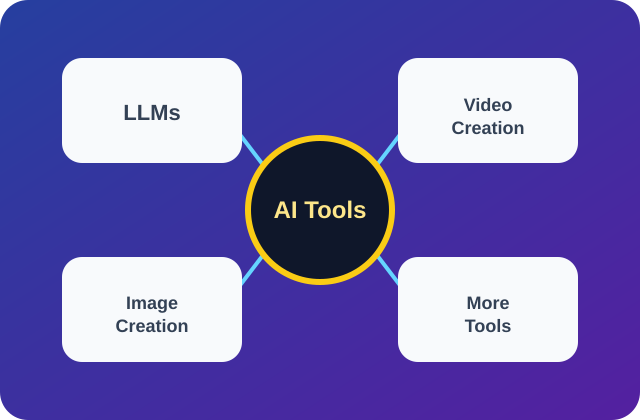
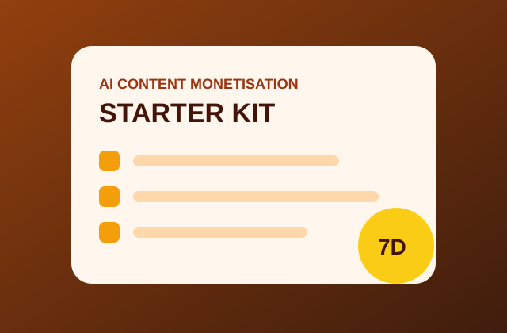
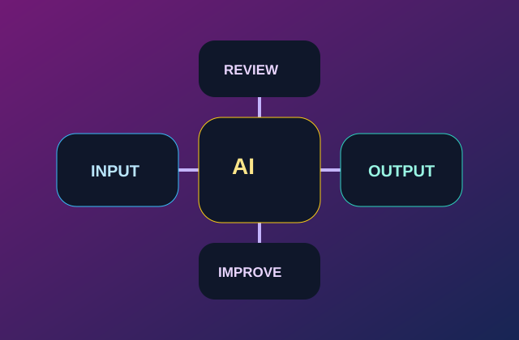
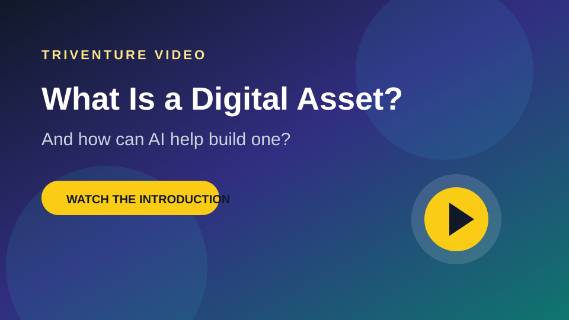
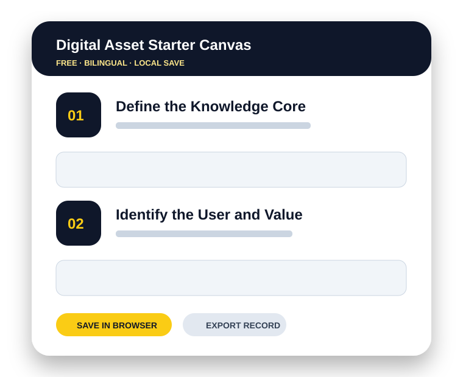

AI优先的数字资产开发
用AI开发真正有用的数字资产
Triventure帮助个人和机构，把知识、想法与工作流程，转化为实用AI工具、数字产品和可以长期发展的知识资产。
最快的起点是AI工具平台，可进入研究、写作、图片、音频和视频等功能。

AI工具平台 研究 · 写作 · 图片 · 音频 · 视频 进入平台 →重点AI工具包
先进入AI平台，再选择具体任务
AI平台是访客最主要的进入路线。其他工具包帮助用户规划数字资产、测试产品想法或建立可重复工作流。


AI工具平台由第三方运营，模型、价格、账户、隐私和服务条款均由平台提供方管理。
视频演示
让访客看到，而不只阅读文字
这个模块支持YouTube视频ID、Vimeo视频ID或网站托管的MP4文件，不需要重新设计页面。

建议制作的第一条视频
什么是数字资产？AI可以怎样帮助你？
一条60至90秒的介绍视频，可以展示启动画布、AI工具平台和一个真实项目。
- 嵌入YouTube或Vimeo视频
- 托管并播放MP4文件
- 发布前使用品牌视频封面
免费启动画布
数字资产启动画布
使用Triventure第一款公开工作流工具，把一个知识核心转化为现实可行的第一项数字资产。
- 支持中文和英文界面
- 资料保存在当前浏览器
- 支持导出JSON记录
- 支持打印或另存为PDF
- 规划公开、付费和私密内容

方法
从知识到资产的一条清楚路径
访客可以通过六个相互分开的步骤，快速理解完整方法。
发现
找出有用的知识、经验或原创内容。
结构化
整理成清楚的系统、框架或流程。
制作
完成最小但真正有用的产品或资源。
登记
记录所有权、版本、文件和访问权限。
发布
让真实用户看到、使用并验证价值。
改进
更新、翻译、组合、授权或继续开发。
与TRIVENTURE合作
务实服务，明确成果
每项服务都直接说明可以得到的结果，避免开放式和过长的描述。
知识转产品
把经验做成产品
指南、工作簿、电子书、工具包、学习资源和内容系统。
AI工作流
建立可重复流程
研究、写作、媒体制作、审核、发布和持续改进工作流。
数字出版
准备正式发布
结构、编辑、双语改编、PDF、电子书和元数据准备。
资产系统
整理你拥有的内容
资产登记、文件系统、版本、访问级别和开发优先级。
项目与实验
真实工作，如实标注开发状态
项目可以证明Triventure确实在制作和测试数字资产，而不只是说明概念。
专业知识领域
中国及中澳洞察
AI工具和数字资产是平台的主要产品方向。中国及中澳知识仍然是具有特色的专业领域，用于支持研究、出版、本地化和项目工作。
关于TRIVENTURE
AI辅助工作，建立在人的真实经验之上
Triventure是一家位于澳大利亚的数字出版与知识资产开发公司。AI支持研究、整理和生产；人的经验、判断、原创性和责任始终处于核心位置。
从这里开始
先探索AI，再开发数字资产
可以先进入AI工具平台，使用免费规划工具，查看实用资源，或联系Triventure开发数字产品、出版物、双语内容和AI工作流。